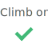

Prime Climb
Prime Climb looks at weather conditions and route characteristics to recommend the best crags for your trip.
Purpose
When planning a rock climbing trip, climbers have a handful of things to consider:
- How much time do I have?
- What kind of climbing do I want to do?
- What will the weather be like?
- Whom might I go with?
The first two questions – the type of climbing and the time frame for the trip – are the easiest to answer. However, the latter two (determining the weather and finding folks to climb with) require some juggling to determine the feasibility of a trip, which analysis goes something like:
| Bad weather | |
| Friends unavailable | |
| Bad weather + friends unavailable | |
| Good weather + friends unavailable | |
| Good weather + friends available |
Basic math, yet the actual process of arriving there can be complex. Preliminary user research (i.e. conversation with friends of mine who climb) indicated that climbers typically use some combination of weather reports, climbing location descriptions, and texts or emails between friends to figure out if and where to climb – a task that can be hard to pull off the week before a trip.
Prime Climb aids this decision-making process by combining information about climbing spots with relevant weather reports to recommend ideal climbing locations. In addition to these recommendations, users can indicate whether they plan to climb at a location and can invite friends to join.
Audience
People who climb outdoors. To make the application appeal to them, it needs to speak their language (without sounding patronizing) and remain straightforward enough to simplify climb planning rather than add another layer of complexity to it. The information needs to be clear, reliable, and easily shared.
Most of all, however, Prime Climb needs to provide reliable recommendations.
Aspects
Because it will need to regularly access users' locations and possibly their contacts, Prime Climb will be a mobile app. It will have a few main features:
- Climbing locations displayed, along with relevant information (e.g. types of routes, distance from current location, and current weather) and whether the place is climbable for the given time frame.
- Users can indicate whether or not they plan to climb at a certain location.
- Users can invite friends to join a climbing trip.
Data
In order to determine whether to recommend a climbing location, a set of rules need to be written that take into account these variables (and perhaps others):
- Weather conditions
- Temperature
- Precipitation / Humidity
- Wind
- Location route characteristics
- Relation to sun (i.e. climbing in the sun or shade)
- Protection (e.g. exposed, sheltered, etc.)
Generally speaking, the recommendation analysis might look something like this:
|  | ||
|---|---|---|
| Hot + Dry + Strong wind + Sheltered | Cool + Damp + Moderate wind + Sheltered | Sweltering + Dry + Strong wind + Exposed |
| Warm + Dry + No wind + Exposed | Warm + Dry + Strong wind + Exposed | Cool + Thunderstorms + Sheltered |
| Cool + Dry + Light wind + Sheltered | Cold + Dry + Moderate wind + Exposed | Warm + Moderate rain + Light wind + Exposed |
| . . . | . . . | . . . |
And so on.
Login
The login page is relatively basic, allowing users to either log in with their current account or register if it's their first time.
Add location
Upon logging in for the first time, a user will be prompted to add a climbing location. This gives Prime Climb a reference for providing recommendations, and allows the user to see those places where she most often climbs.
Home
The home screen shows a catalog of locations and their recommendations, framed by a date selection.
The primary sorting criteria of the locations is the strength of the recommendation: recommended climbs are positioned at the top, followed by less-strongly recommended places. The second sorting criteria is distance, closest locations being first.
Each location is presented as a card, which shows general information about the place.
Home
Date selection
The date selection is key, since it provides context for Prime Climb's recommendations. By default it will be set to "This weekend," meaning the upcoming weekend. Users will also be able to select other general options, such as "Today," and "Next week," all of which show the specific dates for further clarity.
For greater flexibility in choosing dates, a granular date selection may make sense. However, beyond a certain time frame (say, two weeks into the future), users would need to be notified that weather predictions are unreliable. A flexible time frame selection would allow users to track weather changes for climbs planned further in advance, which could prove valuable.
Location Detail
The location detail page provides information about a climbing location, beginning with Prime Climb's recommendation for the time frame. Further down, users will be able to read about the place, see popular routes, and view and upload pictures.
Prime Climb will likely rely on open source climbing databases for location descriptions, however a possible future feature would allow users to add notes on their own.
Location detail
“Planning to Climb”
From the location detail page, users can indicate whether or not they plan to climb at a location for a specified timeframe. By default, none of the options will be selected. When selected, they will act as radio buttons, only allowing one to be selected at a time. To unselect an option, a user will touch it again, returning it to the default state.
“Invite a Friend”
When a user indicates that she is going to climb at a location, she'll be prompted to invite friends. She can search by their Prime Climb user name, or send them a text message. The invitation confirmation button text will be tailored to the time frame for which she plans to climb (e.g. "This weekend").
Once sent, selected Prime Climb users will receive an invitation notification in the application for the trip. Those to whom a text message was sent will receive information about the trip, as well as the option to view it in Prime Climb.
Home
Planning to climb, friends invited
When a user indicates that they're planning to climb at a location, the card for that location will sort to the top of the location list and stand out visually (here with a bolder border). Its heading will read "Upcoming trip." Likewise, once friends have been invited to join a climb, their user names will display in the location card.
If the user decides not to climb, she can select "Not going" from the location detail page, which, if she wishes, will notify any users who accepted his invite to the trip. The location will then return to the default sort order.
Weather alert
Prime Climb tries to help climbers avoid obsessively checking weather conditions before a climb. So that they don't need to obsessively check Prime Climb's recommendation for their climb, they can set alerts to let them know if the weather turns sour for a planned trip.
Navigation
Users can view their profile and settings through a menu that slides in from the app's left edge. From here they'll be able access their profile, along with pages that show their locations, their friends, alert settings, and help (tips and FAQ).
Web application
Although Prime Climb would exist primarily as a mobile app, a web app counterpart might appeal to people who live in areas of minimal cell receptivity. A web app might also provide the opportunity to connect users to other climbing communities, such as The Crag.
Sitemap
Prime climb is a relatively shallow mobile app, the navigation not going much deeper than two layers. A sensible third layer would be pages showing others' profiles, navigated to (or searched) through the "friends" page.
Planning
Planning description, 12 weeks to a prototype
| Weeks 1-3 Initial research |
Weeks 4-5 Develop minimum viable product |
Week 6 Test internally, revise |
Weeks 7-9 User test |
Weeks 10-12 Refine and share prototype |
|---|---|---|---|---|
| Conversations with the customer about the aim and approach of the project. | Revise wireframes. Create a taxonomy for the language of the application, and create a general outline for the recommendation algorithm. | Test Prime Climb internally to get an initial sense of the accuracy of its recommendations. | Share Prime Climb MVP with a small group of users. Create open channels for feedback. | Work with frontend and backend development teams to create secondary features, such as the ability to invite friends, upload photos. |
| Identify hypotheses about climbers' planning process and the value of the app. | Work with frontend and backend developers to develop iPhone and/or Android MVP that includes primary functionality (e.g. only location recommendations). | Invite climbers to try the prototype (aim for a dozen or so). Post invitations online, share through word of mouth, etc. | Study analytics over the three weeks. Revise functionality in response. | Refine features, finalize for initial prototype release. |
| Informal conversations with groups of climbers to understand and document their experience. Create story map, share with team and customer. | Identify initial analytics to test (e.g. how often certain date ranges used or how often people indicate they're planning to climb). Work with analytics team to create strategy for gathering information from the MVP release. | Share MVP with the customer. | Conduct survey with users to learn about their experience using Prime Climb. Receive input on additional features. | Hand prototype off to customer, recommend strategy for sharing with a broader audience of climbers. |
| Create, review, and revise wireframes, share internally and with customer. | Share progress with customer. | Share findings with team and customer throughout. | ||
| Conversations with backend developers about possibilities and limitations of data in the application. |
Further ideas
Or, What I would have made if I had more time
- A feature that shows who – people inside or outside a user's network – is climbing at certain locations. Users would see a list of their friends and where they are planning to climb, if they are. Users would also see others' names alongside various locations, and be able to message them.
- Climbing badges and history. When a person climbs somewhere, they'd be able to save information about their climb which would be visible to others. They'd also see where they climbed and when, which could serve as a useful analytic for the success of the recommendation system. In other words, if they planned to climb somewhere and saved their climb, then the recommendation was accurate.
- A useful profile page. Users would be able to determine alert behavior, add locations, and edit information about themselves.
Considerations and challenges
- Getting accurate data. The accuracy of the recommendations is important (they are the core of the application), and depends on two things being accurate: the weather predictions, and the characteristics of the climbing routes at certain locations. While weather predictions are increasingly reliable, it may be difficult to find or gather data about climbing conditions. Websites like The Crag allow climbers to contribute information to a database of locations and routes, which would be useful for the latter type of data. Additionally, if a location doesn't exist yet, Prime Climb would need functionality to allow users to add information about a new place.
- Designing the “planning” interaction. Because the recommendations exist for a certain time period (e.g. "today" or "this weekend"), if a user indicates that she is climbing "next weekend," then this indication will reset once the weekend has passed. I would want to make sure that this interaction makes sense, and that the time frame concept makes sense across the entire application. It would help to study how other planning applications solve these problems (e.g. Airbnb, Vamo, Foursquare). The planning feature would need to be flexible but still useful.
- Offline functionality. Most outdoor climbing takes place in areas of little-to-no cell receptivity. Prime Climb would need useful offline features for this reason, potentially allowing users to access climb data or upload photos or other information locally before syncing with the application.